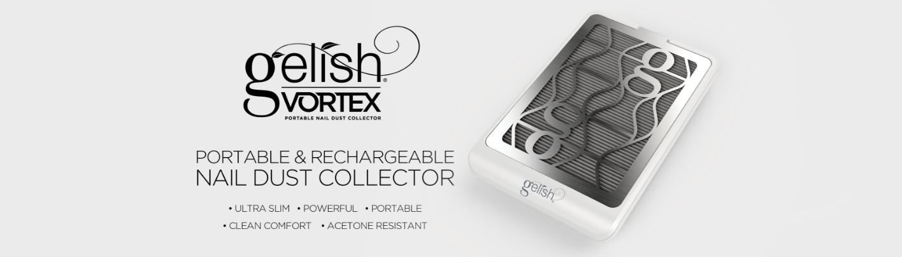
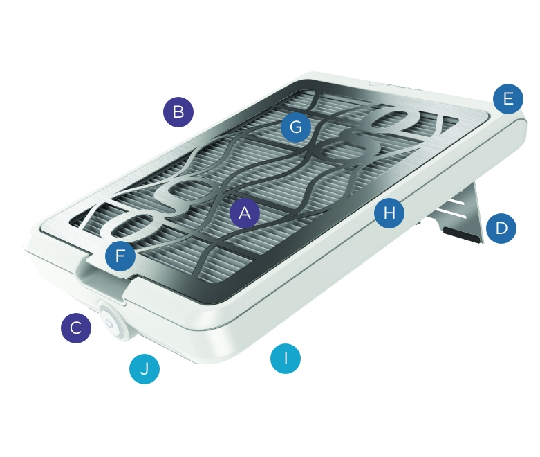

VORTEX Nail Dust Collector
THE POWER OF CLEANER AIR
The new standard in salon comfort! The Gelish VORTEX™ has a smart, space-saving design with unparalleled airborne particle and dust collection, delivering cleaner air for you and your clients without compromising the speed of your e-file service.
Technical Features

- Vortex-Powered 4300 RPM Fan
- Consistent Suction Regardless Of Battery Level
- Power Indicator Light
- Elevated Flip Stand
- Contour Curve For Maximum Client Comfort
- Sanitizable Magnetic Grille
- Washable Filter
- Acetone Resistant
- Slim Design - Just 2.1” High
- Portable, Rechargeable & Cordless
PORTABLE NAIL DUST COLLECTOR SPECIFICATIONS:
UNIT WIDTH: 210 mm / 8.27 INCHES • HEIGHT: 76 mm / 2.1 INCHES • DEPTH: 302.7 mm / 11.92 INCHES • WEIGHT: 995 G / 35 OZ. (2.2 LBS)
FILTER WIDTH: 176 mm / 6.93 INCHES • HEIGHT: 252 mm / 9.92 INCHES